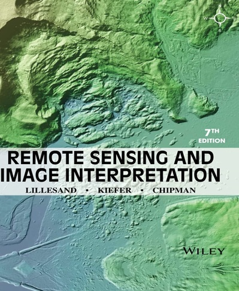

STEM Education
The education component emphasizes practical learning through image acquisition, remote-sensing, data analysis, and image interpretation.
Student Activities
- Satellite-data sourcing, NDVI index calculation and spatial vegetation mapping (at regional level)
- UAV image collection, image processing, ExG index calculation (at local level)
- Hyperspectral acquisition, image calibration, NDVI calculation and image analysis (at micro level)
- Python (Google Colab) and ENVI® 5.6 (NV5 Geospatial Solutions) image processing tools
Suggested Textbook
The experiments and educational activities presented on this website can be used together with selected readings from the following textbook.

Figure 1. Remote Sensing and Image Interpretation, Seventh Edition.
Authors: Thomas Lillesand, Ralsph W. Kiefer, Jonathan Chipman
Edition: Seventh Edition
Publisher: Wiley
Suggested Reading by Topic
The following chapters from Remote Sensing and Image Interpretation, Seventh Edition, by Lillesand, Kiefer, and Chipman provide background information for the educational activities presented on this website.
| Website Topic | Suggested Reading |
|---|---|
| Introduction to Remote Sensing | Chapter 1 – Concepts and Foundations of Remote Sensing |
| Remote Sensing Instruments and Platforms | Chapters 1 and 4 |
| Sentinel-2 Imagery | Chapters 4 and 5 |
| NAIP Aerial Imagery | Chapters 2 and 4 |
| UAV RGB Imagery | Chapters 2 and 4 |
| Hyperspectral Sensing | Chapter 4 |
| NDVI and Vegetation Analysis | Chapters 4, 7, and 8 |
| Excess Green (ExG) and Digital Image Processing | Chapter 7 |
| Image Enhancement and Interpretation | Chapter 7 |
| Agricultural Applications | Chapter 8 |
Remote Sensing Laboratories
A series of hands-on laboratory activities has been developed to introduce students to fundamental concepts in remote sensing and digital image processing. The laboratories use satellite and aerial imagery to explore multispectral imaging, vegetation indices, and multi-sensor image analysis.
The laboratory activities progressively introduce students to the processing and analysis of Sentinel-2 satellite images, aerial and UAV imagery.
View Remote Sensing LaboratoriesHands-On Learning Activities
The educational component of the RS & STEM Education project includes laboratory activities and test cases designed to provide students with hands-on experience using real remote-sensing data.
Remote Sensing Laboratories
Guided laboratory activities introduce students to fundamental concepts in remote sensing and digital image processing using satellite and aerial imagery.
View LaboratoriesRemote Sensing Test Cases
Test cases provide students with real-world remote-sensing problems in which they apply image-processing and analysis techniques to agricultural and environmental datasets.
View Test Cases